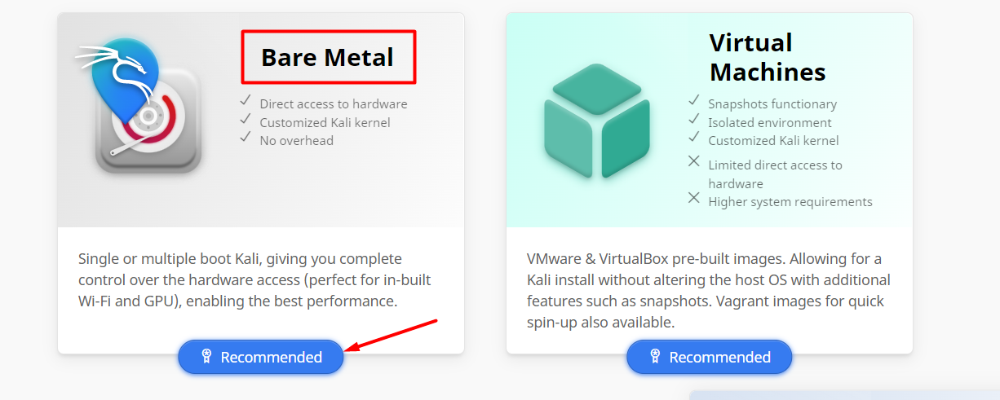
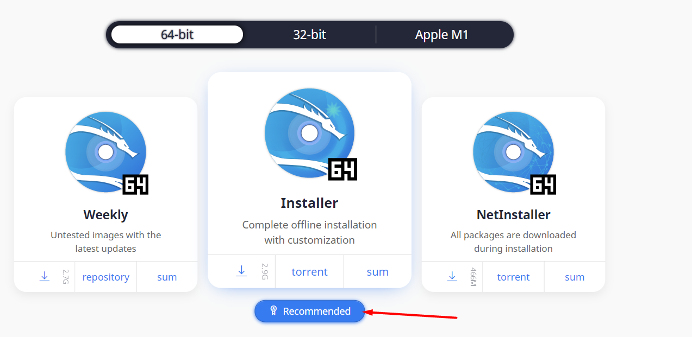
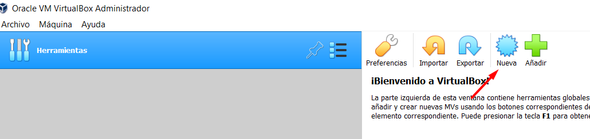

Cómo crear un laboratorio para hacking
Instalación de Virtual Box
El primer paso para crear nuestro laboratorio es descargarnos Virtual Box, un software de virtualización para crear máquinas virtuales con instalaciones de sistemas operativos. Esto quiere decir que si tienes un ordenador con Windows, por ejemplo, puedes crear una máquina virtual con cualquier otro sistema operativo sin necesidad de crear particiones en tu propio equipo.
Una vez instalado, sigues estos pasos para configurar una red NAT, que usaremos en las máquinas virtuales que instalaremos más adelante. En el menú archivo de Virtual Box, elige Preferencias, y en la opción Red crear una nueva red NAT.
Descarga la imagen Kali
Kali Linux es una distribución basada en Debian GNU/Linux diseñada especialmente para la auditoría y seguridad informática. Desde la página oficial de Kali-Linux descarga el instalador de kali eligiendo la opción Bare Metal.


Instalación de la máquina virtual Kali
Una vez instalado Virtual Box y descargada la imagen de Kali, vamos a instalar Kali en nuestro equipo. Ejecuta el software de virtualización Virtual Box y elige la pestaña Nueva.

A continuación da un nombre a tu máquina virtual, escribe Linux en la opción Tipo, y elige la versión de Debian (64-bit).
Elige la cantidad de memoria RAM reservada para la máquina virtual según las características de tu equipo anfitrión.
Deja las siguientes opciones por defecto.
A continuación asigna el espacio del disco duro virtual que tendrá la máquina.
Ahora vamos a configurar algunos aspectos de la máquina virtual.
En la pestaña Configuración haz click sobre Sistema y desmarca la casilla Disquete.
En la pestaña Procesador elige el número de procesadores según las características de tu equipo anfitrión.
A continuación en la opción Almacenamiento haz click sobre el icono del CD y selecciona el disco virtual óptico en la ruta de descarga de la imagen iso de Kali.
Una vez configurada la máquina haz click sobre la pestaña Iniciar y comenzará la instalación de Kali.
Selecciona el idioma y la ubicación.
Asigna un nombre a la máquina.
Deja la siguiente casilla en blanco.
Escribe el nombre completo del usuario.
Y escribe el nombre del usuario para la nueva cuenta y asignale una contraseña.
Las siguiente opciones déjalas por defecto.
Marca la opción Sí y dale a continuar.
En la siguiene panatalla deja todas las opciones por defecto y dale a continuar.
Ahora marca la opción Sí y continúa con la instalación.
A continuación marca la segunda opción.
Dale a continuar y la instalación se habrá completado.
Inicia sesión con el usuario de la nueva cuenta y la contraseña asignada.
¡¡¡Ya tienes Kali Linux instalado en tu equipo!!!
Para poder compartir el portapapeles y poder arrastrar y soltar entre el equipo anfitrión y la máquina virtualizada haz lo siguiente.
No te olvides de configurar el adaptador de red de la máquina. Para ello apaga la máquina y desde el menú configuración, en red selecciona la opción red NAT y como nombre la que creamos en el paso de instalación de Virtuabl Box.
Instalación de la máquina Metasploitable
Metasploitable es una máquina virtual Linux creada intencionalmente vulnerable. Esta máquina virtual se puede utilizar para probar herramientas de seguridad y practicar hacking de modo seguro. Puedes descargar la máquina desde este enlace.
Una vez descargado, descomprime el archivo y abre el software de virtualización Virtual Box. Haz click sobre la pestaña Nueva y asígnale un nombre a la máquina virtual. Elige Linux en la opción Tipo y como versión elige Other Linux (64-bit).
Asigna la memoria RAM según las características de tu equipo anfitrión.
Ahora selecciona la opción “Usar un archivo de disco duro virtual existente” y haz click sobre el icono carpeta.
Añade el archivo con extensión .vmdk que encontrarás en la ruta donde descomprimistes el archivo .zip de metasploitable2.
Ahora ya puedes iniciar la máquina, el usuario y contraseña para acceder es msfadmin.
¡¡¡ Hemos acabado !!! Ya tienes un laboratorio para realizar pruebas de seguridad y hacer Hacking de forma segura.
Configura el adaptador de red como hicimos en la máquina Kali.